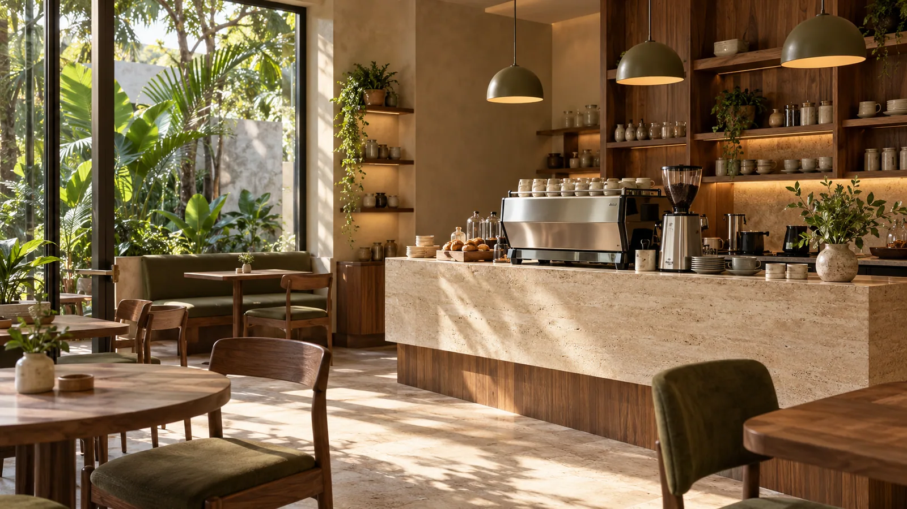
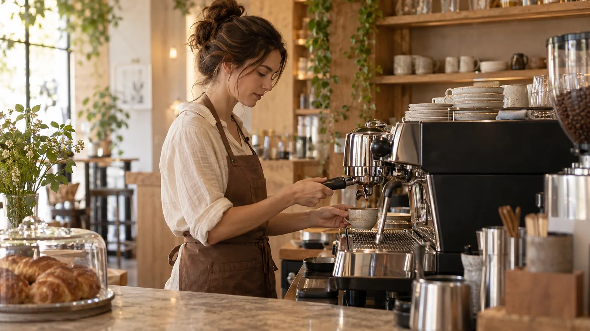
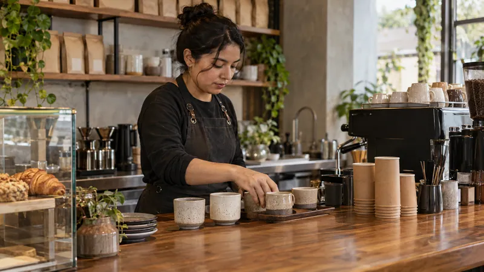
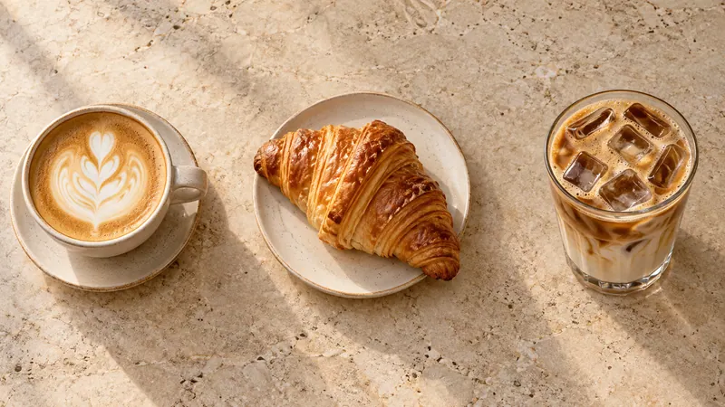
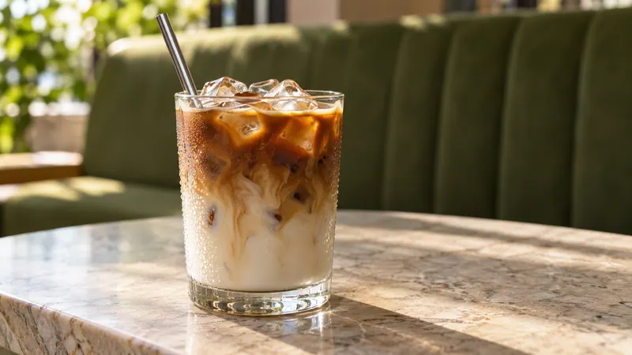

Doble espresso con leche microespumada. Intenso, dulce y suave al mismo tiempo.
Lunes a viernes de 08:00 a 19:00
Café de especialidad · Barrio del Jardín
Un buen café.
Un mejor
momento.
Tostamos cada martes, horneamos dos veces al día y preparamos cada taza sin apuro. Ven a quedarte o pide antes y recoge sin fila.
- Hoy en el filtro
- Nariño · frambuesa y miel
- Croissants
- Salen a las 08:00 y a las 13:00
HECHO
CON CALMA
✳
CON CALMA
✳

Pequeños rituales, grandes días.Café de especialidad ✳Horneado con cariño ✳Disfrutar lo cotidiano ✳
Nuestro origen
Tres fincas.
Un mismo cuidado.
Compramos a fincas pequeñas que conocemos por su nombre y tostamos cada martes en lotes de 12 kg, para que el café llegue a la barra en su mejor semana.
Pitalito, HuilaFamilia Cerquera
Finca La Esperanza
Una finca de cuatro hectáreas entre guamos y plátano. La cosecha se recoge a mano, grano por grano, cuando la cereza está bien roja.
- Altura
- 1.750 m s. n. m.
- Variedad
- Caturra y Castillo
- Proceso
- Lavado
- En la barra
- Espresso de la casa
- Panela
- Mandarina
- Cacao
Acidez3/5
Dulzor4/5
Cuerpo4/5

Cómo lo preparamos
Un buen ritual
empieza antes
del primer sorbo.
Nada de esto se ve desde la mesa, pero se nota en la taza. Esta es la receta que seguimos con cada espresso.
- 01Ajuste diario
Molemos al momento
Ajustamos la molienda al abrir y otra vez a mediodía, cuando cambia la humedad.
- 021 : 2
Pesamos cada dosis
18 g de café para 36 g en la taza. La balanza nunca sale de la barra.
- 0393 °C
Extraemos con tiempo
Entre 27 y 30 segundos a 93 °C. Si se sale de ahí, lo repetimos.
- 0460 °C
Texturizamos la leche
Hasta 60 °C: el punto en que se siente dulce y todavía no quema.
Un día en Maré
Lo que pasa entre
la apertura y el cierre.




Pedidos para recoger
Pide antes.
Recoge sin fila.
Eliges en la carta, dices a qué hora pasas y la barra lo prepara en su turno. Cuando está listo, te llega un mensaje. Nadie tiene que preguntar “¿ya está el mío?”.
- 1Eliges tu café y algo de la vitrina.
- 2La barra recibe tu ticket en orden.
- 3Te avisamos por WhatsApp cuando está listo.
Nos vemos en Maré
Una mesa.
Un café.
Tiempo para ti.
Hay luz de mañana, mesas para conversar y un rincón para leer. Ven solo, con alguien o con ganas de dejar el teléfono a un lado.
- Wifi sin contraseña larga
- Enchufes en la barra larga
- Mascotas en la terraza
El lugar
Pasaje Olivo 12
Barrio del Jardín
Cuándo pasar
Consulta el horario
- Lunes a viernes
- 08:00 — 19:00
- Sábados y domingos
- 09:00 — 18:00
La barra y los horneados acompañan todo el día. Para una pausa larga, las mañanas entre semana son el mejor momento.